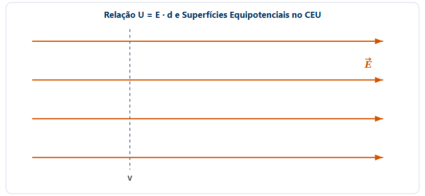

3º Ano | Aula 05: Trabalho da Força Elétrica e Potencial Elétrico
📚 Resumo
A força eletrostática é uma força conservativa, o que significa que o trabalho realizado por ela independe da trajetória percorrida pela carga, dependendo apenas das posições inicial e final: $\tau_{A \to B} = q \cdot (V_A - V_B) = q \cdot U_{AB}$.
O Potencial Elétrico ($V$) é uma grandeza escalar que mede o nível de energia potencial elétrica por unidade de carga em determinado ponto do espaço. Em um Campo Elétrico Uniforme, a diferença de potencial ($U$) relaciona-se diretamente com o campo elétrico por $U = E \cdot d$.
📖 Energia, Trabalho e Potencial Eletrostático
1. Energia Potencial Elétrica ($E_p$)
A energia armazenada no sistema formado por duas cargas puntiformes $Q$ e $q$, separadas por uma distância $d$ no vácuo, é dada por:
$$E_p = k_0 \cdot \frac{Q \cdot q}{d}$$
Unidade no SI: Joule ($\text{J}$). Por ser uma grandeza escalar, o sinal das cargas deve ser incluído no cálculo.
2. Potencial Elétrico ($V$)
O potencial elétrico em um ponto $P$ a uma distância $d$ de uma carga geradora $Q$ mede a energia potencial por unidade de carga de prova:
$$V = \frac{E_p}{q} \implies V = k_0 \cdot \frac{Q}{d}$$
Unidade no SI: Volt ($\text{V}$), onde $1\text{ V} = 1\text{ J/C}$.
Se $Q > 0 \implies V > 0$ (Potencial positivo).
Se $Q < 0 \implies V < 0$ (Potencial negativo).
O potencial elétrico resultante em um ponto sujeito a várias cargas é a soma algébrica dos potenciais individuais: $V_R = V_1 + V_2 + \dots$
3. Trabalho da Força Elétrica ($\tau$) e Diferença de Potencial ($U$)
Ao deslocar uma carga $q$ de um ponto $A$ para um ponto $B$, o trabalho da força elétrica vale:
Onde $U_{AB} = V_A - V_B$ é a Diferença de Potencial (ddp) ou tensão elétrica.
Cargas positivas ($q > 0$): Movem-se espontaneamente no sentido dos potenciais decrescentes ($\tau > 0$).
Cargas negativas ($q < 0$): Movem-se espontaneamente no sentido dos potenciais crescentes ($\tau > 0$).
4. Relação no Campo Elétrico Uniforme (CEU)
Entre dois pontos $A$ e $B$ alinhados ao longo da mesma linha de força em um CEU, a ddp $U$ e o campo $E$ relacionam-se por:
$$U = E \cdot d$$
Onde $d$ é a distância entre os pontos medida paralelamente às linhas de campo.

Figura 1: Representação do deslocamento de cargas e superfícies equipotenciais perpendiculares ao campo elétrico.
5. Superfícies Equipotenciais
São superfícies imaginárias constituídas por pontos que possuem o mesmo potencial elétrico ($V_A = V_B$).
São sempre perpendiculares às linhas de força do campo elétrico.
O trabalho para mover uma carga sobre uma mesma superfície equipotencial é nulo ($\tau = 0$), pois $V_A - V_B = 0$.
💡 Física em Ação
⚡ Desfibrilador Cardíaco
Os desfibriladores armazenam energia potencial elétrica em capacitores submetidos a altas diferenças de potencial (milhares de volts) para descarregá-la rapidamente no peito do paciente e restabelecer o ritmo cardíaco normal.
A tensão elétrica disponível nas tomadas das nossas casas nada mais é do que uma diferença de potencial ($U$) mantida pela concessionária de energia para realizar trabalho e movimentar os elétrons na fiação dos aparelhos.
✅ 5 Questões Resolvidas (R 1 a 5)
R 1: Potencial Criado por Carga Puntiforme
Enunciado: Determine o potencial elétrico gerado por uma carga $Q = +6,0\ \mu\text{C}$ no vácuo em um ponto localizado a $3,0\text{ m}$ da carga. ($k_0 = 9 \times 10^9\text{ N}\cdot\text{m}^2/\text{C}^2$).
Enunciado: Uma carga de prova $q = +2,0\ \mu\text{C}$ é deslocada de um ponto $A$ ($V_A = 100\text{ V}$) até um ponto $B$ ($V_B = 30\text{ V}$). Calcule o trabalho realizado pela força elétrica nesse deslocamento.
Enunciado: Dois pontos $A$ e $B$ situam-se sobre a mesma linha de força de um campo elétrico uniforme de intensidade $E = 500\text{ N/C}$, distanciados de $0,2\text{ m}$. Qual é a diferença de potencial entre $A$ e $B$?
Resolução:
Em um CEU, $U = E \cdot d$.
$U = 500 \cdot 0,2 = \mathbf{100\text{ V}}$.
R 4: Energia Potencial Elétrica
Enunciado: Duas cargas puntiformes $q_1 = +3,0\ \mu\text{C}$ e $q_2 = -4,0\ \mu\text{C}$ encontram-se no vácuo separadas por $0,2\text{ m}$. Qual é a energia potencial elétrica desse sistema?
Enunciado: Duas cargas $Q_1 = +8\ \text{nC}$ e $Q_2 = -2\ \text{nC}$ estão no vácuo separadas por $1,0\text{ m}$. Calcule o potencial elétrico resultante no ponto médio da reta que une as cargas.
Resolução:
A distância de cada carga ao ponto médio é $d = 0,5\text{ m}$.
$V_1 = k_0 \frac{Q_1}{d} = 9 \times 10^9 \frac{8 \times 10^{-9}}{0,5} = \frac{72}{0,5} = +144\text{ V}$.
$V_2 = k_0 \frac{Q_2}{d} = 9 \times 10^9 \frac{-2 \times 10^{-9}}{0,5} = \frac{-18}{0,5} = -36\text{ V}$.
$V_R = V_1 + V_2 = 144 + (-36) = \mathbf{+108\text{ V}}$.
✍️ 5 Questões Propostas (P 6 a 10)
P 6: Movimento Espontâneo de Elétron
Enunciado: Quando um elétron (carga negativa) é abandonado do repouso em um campo elétrico, ele se move espontaneamente para regiões de maior ou menor potencial elétrico?
Resolução: Move-se espontaneamente para regiões de maior potencial elétrico. Cargas negativas são atraídas no sentido oposto às linhas de campo, caminhando do menor para o maior potencial para reduzir sua energia potencial.
P 7: Trabalho sobre Superfície Equipotencial
Enunciado: Qual é o trabalho realizado pela força elétrica ao mover uma carga $q = 5\ \mu\text{C}$ ao longo de uma superfície equipotencial de $50\text{ V}$ por uma distância de $2\text{ m}$?
Resolução: Como os pontos inicial e final pertencem à mesma equipotencial, $V_A = V_B = 50\text{ V}$. Logo, $\tau = q(V_A - V_B) = q(0) = \mathbf{0\text{ J}}$ (trabalho nulo).
P 8: Ddp entre Placas em Campo de $2000\text{ V/m}$
Enunciado: Duas placas condutoras paralelas distam $0,05\text{ m}$ entre si. Sabendo que o campo elétrico uniforme entre elas tem módulo $E = 2000\text{ V/m}$, qual é a ddp entre as placas?
Resolução: $U = E \cdot d = 2000 \cdot 0,05 = \mathbf{100\text{ V}}$.
P 9: Potencial Elétrico no Infinito
Enunciado: Por convenção, qual é o valor do potencial elétrico no infinito para uma carga geradora isolada?
Resolução: O potencial elétrico no infinito é adotado como zero ($V_{\infty} = 0$), pois $V = k_0 \frac{Q}{d}$ tende a zero quando $d \to \infty$.
P 10: Variação de Energia Potencial no Deslocamento
Enunciado: Se a força elétrica realiza um trabalho positivo de $+10\text{ J}$ sobre uma partícula ao movê-la de $A$ para $B$, a energia potencial elétrica da partícula aumentou ou diminuiu?
Resolução: A energia potencial diminuiu em $10\text{ J}$. Como a força elétrica é conservativa, $\tau_{A \to B} = -\Delta E_p = E_{pA} - E_{pB}$. Se o trabalho é positivo, a energia potencial final é menor que a inicial.
🎓 TESTES (T 11 a 15)
🚧 EM BREVE!
Questões de vestibulares serão disponibilizadas em breve.